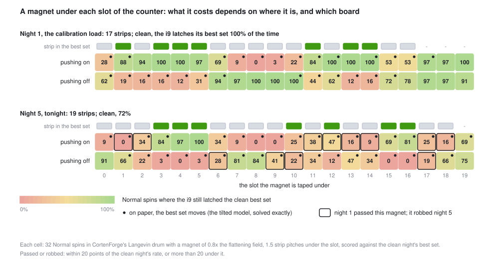
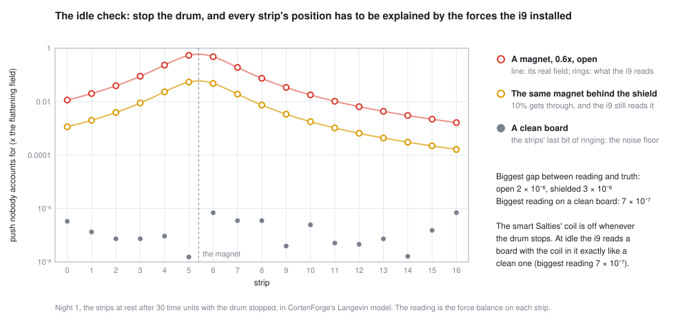
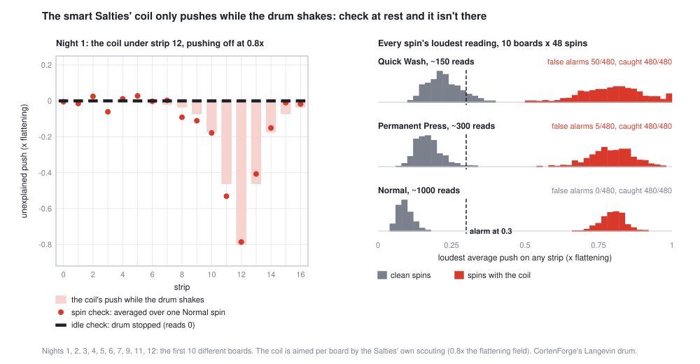

The washer can run perfectly and still hand you the wrong trades, because it solves the problem the world gives it, not the one its model describes. Here's what a hidden magnet costs, how the i9 finds a force nobody installed using nothing but force balance, and what happens when the saboteurs learn when it checks.
The i9 works from a model. It believes each steel strip feels exactly three things: its springs, the push it installed for each trade's value, and the push for a want, if there is one. It turns tonight's trades into those pushes, shakes the drum, and reads off where the strips settle (The Machine has the details).
The drum doesn't know about the model. It just obeys physics. Tape a magnet under the counter and the strips feel a fourth push. The drum then settles into the lowest energy of a different problem, and it does that flawlessly. Nothing is broken. The computation is right, and the answer is wrong for the street.
That's model risk: losing money not to a bug or a typo but to the gap between what your model assumes and what's really going on. The Salties, a gang of local saboteurs, are a living reminder. The dumb ones brag about it first ("Magnet stuff tonight. Science, baby."). The smart ones say nothing.
Magnet strength is measured against the flattening field: the push that flattens a strip's well so it can't hold "off" at all. We taped a magnet of 0.8 times that, just short of pinning a strip, under every slot of the counter in turn, pushing strips on and then off, and ran 32 spins each:

The same magnet is harmless in one spot and ruinous in the next. On night 1, a magnet under slot 8 pushing on takes the best set from 100% to 0: it pushes trades into the set that clash with the ones that belong there. Turn it around to push off and it costs nothing, because the strips near slot 8 aren't in the best set anyway. A model error only hurts where it touches a decision.
You can estimate the damage without spinning anything: add the magnet's push to each trade's worth (a push is worth a fixed number of Goo to the drum), solve the tilted board exactly, and see if the best set moves. That's a model of the model error, and it calls 64 of the 80 cells right. It misses both ways. Sometimes the best set moves on paper and the drum still finds the clean one. Sometimes nothing moves on paper and the drum still slips. A stress test like this tells you where to look, not what will happen.
The i9 has one defense built in. It never trusts where the strips end up. While the drum spins, it scores every reading with its own clean model and keeps the best. Across the 80 magnet cells, the strips came to rest on the clean best set in 17% of spins, but the i9 latched it in 51%. (Even with no magnet on night 1, the strips rest on it 62% of the time and the latch catches it 100%.) A drum that's been tampered with still passes the right answer by now and then, and an i9 that scores by its own books grabs it.
An obvious check: run a board whose answer you know (night 1, which the clean drum gets right on Normal nearly every time), and if the drum misses it, suspect tampering. In the figure, night 1 passes 20 of the 40 magnets, and 12 of those 20 rob night 5. A known-answer test can only see errors that touch its own answer. Passing it means "nothing that hurts this board", not "nothing".
Here's a check that doesn't depend on which board you run. Stop the drum and let the strips come to rest. Each strip has a Hall sensor that reads where it sits, and the i9 knows the shape of the well, so it knows how hard the well pulls on the strip at that spot. A strip at rest isn't moving, so the forces on it add up to zero:
the well's pull = the trade's push + the springs from its neighbors + whatever's left
Everything but the last term is something the i9 installed or can measure. Whatever's left over is a force nobody accounts for. On a clean board it should be zero.

It works to about two millionths of the flattening field. It finds the magnet behind the shield, too (10% gets through, and 10% of a magnet is still far above the noise). It needs no idea what the magnet is, only that a force exists that the books don't explain, and on which strip. That strip is where the shield goes. The plate covers two strips either side, so you have to know where to put it.
This is reconciliation: two independent records of the same thing (where the strip sits, and the forces that are supposed to put it there) must agree, and the difference between them, the break, is the information. It also works with a want installed, since a want is a push the i9 put there itself and can subtract.
The smart Salties know about the idle check. So they don't tape a magnet. They hide a coil, an electromagnet wired to the drum's motor so it only pushes while the drum shakes. When the drum stops, it's off. They aim it, too: they scout tonight's board and put it where the best set loses the most.
At rest, a board with the coil in it reads exactly like a clean board, to the last digit. The i9's answer is a spin check: the same force balance, read about once per time unit while the drum shakes, and averaged. The shaking, the springs' ringing and the strips' hops push both ways and average toward zero. The coil always pushes the same way, so it doesn't.

Once the spin check names a strip, the shield goes there. In the game's bench (nights 1 to 10, 48 spins each), shielding the named strip brought Normal back to about its clean rate: 98% vs 98% clean, 81 vs 81, 85 vs 85.
Trade surveillance, fraud detection and risk limits all pick a line. Too low and the analysts drown in false alarms and start ignoring them. Too high and the real thing walks past. The spin check shows the only free lunch: more data pulls the two piles apart. Quick Wash checks fast and cries wolf about one spin in ten. Normal takes longer and never did.
# a magnet under every slot, on night 1 and night 5 (~4 min: 2,624 spins)
cargo run --release --example machine_figs -- magnets
# the idle check on night 1 (seconds)
cargo run --release --example machine_figs -- idle --night 1
# the coil, the idle check and the spin check on 10 boards (~2 min: 2,880 spins)
cargo run --release --example machine_figs -- spincheck
# one night with tonight's Salties, and the coil bench for one night
cargo run --release --example trade_cli -- run --night 21 --salty
cargo run --release --example trade_cli -- smart --night 1The magnet, the coil, the shield and the spin check are in src/trade/salties.rs. The idle check is Machine::stray_field in src/trade/machine.rs: the well's pull at each strip's position minus every force the i9 installed. The drum is CortenForge's Langevin thermostat, and the magnet goes into it as one more external field.
The magnet sits 1.5 strip widths below the row, and its push falls off like (1.5² ÷ (d² + 1.5²))1.5 for a strip d slots to the side. The strip right above it feels 1. What does a strip 3 slots over feel? Why does the shield have to go over the magnet?
(2.25 ÷ 11.25)1.5 = 0.21.5 ≈ 0.09, about 9%. The field is concentrated right over the magnet, so a plate a few slots away covers almost none of it. You have to find the magnet first.
The spin check's noise on a clean spin is about 0.22 with 150 readings. If noise shrinks like one over the square root of the readings, how many readings get it under 0.1?
(0.22 ÷ 0.1)² × 150 ≈ 730 readings. Normal takes about 1,000 and measured 0.09.
A strip sits still. The well pulls it toward "off" with 0.5. The trade's push is 0.2 toward "on", and the springs from its neighbors push 0.1 toward "on". What does the idle check report?
The known forces add to 0.2 + 0.1 − 0.5 = −0.2, toward "off". The strip isn't moving, so something else pushes 0.2 toward "on". That's the reading: an unexplained 0.2 toward "on" on this strip.
The calibration load comes back perfect. Can you say there's no magnet?
No. You can say there's no magnet that hurts the calibration board. A magnet pushing off under strips night 1 doesn't use passes every time. In our map, 12 of the 20 magnets night 1 passed cost night 5 its best set. A test can only rule out what it can see.
The Salties show up on 30% of nights, 40% of those are smart, and 35% of the smart ones cut the power. A quiet cut costs about 2 Goo. The battery that prevents it ties up about 7 Goo of trades every night you run it. Should you run it every night? What if you knew a cut was coming tonight?
A quiet cut comes on 0.3 × 0.4 × 0.35 ≈ 4% of nights, so it costs about 0.04 × 2 ≈ 0.08 Goo a night on average. The battery costs 7. Even on a night you know the cut is coming, 2 is less than 7: take the hit. Insurance that costs more than the loss isn't protection, it's a worse loss.